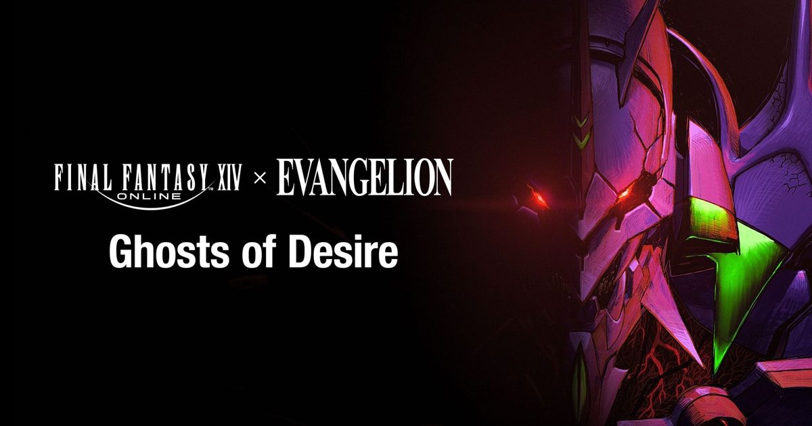

2026-11-01 · 联动深读
东京粉丝嘉年华这一场，Square Enix 一次扔了两件事： 8.0 资料片《永冻之境》（Evercold）从原本承诺的 2027 年 1 月，延期到 2 月 23 日正式上线（2 月 19 日抢先体验），预购 11 月 4 日全球启动； 同时放出了与《新世纪福音战士》联动的 24 人联盟副本 《EVANGELION - Ghosts of Desire（欲望之影）》 的新 PV，11 月 1 日正式上线官方频道。 PV 由葛城美里的原版声优三石琴乃担任旁白，结尾她重现了 TV 版每集下集预告的那句「サービス、サービスぅ！」； 画面里有疾驰的初号机、与它对峙的光之战士，以及短暂露面的碇真嗣。 联动是真的——Khara 全面监修，做过《新剧场版》的前田真宏以 guest creator 身份加入。 但我们认为这次最该被问的不是「真不真」，而是：权限给到了哪一层。

要看懂这次联动的分量，得先知道 24 人联盟副本在 FF14 里是什么位置。 这个格式从《水晶塔》开始，一路走下来有一条非常清楚的规律： 水晶塔讲的是 FF3，玛哈与伊瓦利斯请来了松野泰己，尼尔那一整条线交给横尾太郎，回声系列回到 FF11。 而 8 人规模的常规副本——欧米茄、亚历山大、伊甸、万魔殿、Arcadion——从来都是讲 FF14 自己的故事。
换句话说：FF14 有一条不成文的规矩，8 人副本是自家客厅，24 人副本是请别人来开的房间。 这不是偷懒，而是一种很聪明的内容分工—— 联盟副本的叙事负担轻、机制容差大、可以整体换皮，正好留给外来 IP 和外来作者。 所以 EVA 落在联盟副本这个位置上，是合规的、甚至是理所当然的。真正需要盯的，是钥匙交出去多少。
这是本文的核心判断。 尼尔联动之所以到今天还被当成样板，原因不是它长得像尼尔，而是它讲了一个只有横尾太郎会讲的故事—— 复制工厂、人偶兵站、范式之塔那一整条线的文本、节奏、甚至那份荒诞的残酷，都是作者本人的手笔。 SE 交给他的不是「帮我们画几张图」，是「这一整段由你来写」。
而这次公布的官方头衔是 guest artist and designer（特别嘉宾创作者，负责美术与设计相关环节）， Khara 的身份是全面监修。 前田真宏的分量毫无疑问——他在《EVA 新剧场版：终》里同时担任导演、概念美术总监、分镜、美术设定与原画， 也在《疯狂的麦克斯4》做过概念设计。 但「监修」和「执笔」是两件事，「负责美术与设计」和「负责故事」也是两件事。
这件事为什么致命： EVA 之所以是 EVA，八成在文本，不在机设。 初号机长什么样能被模仿，但「一个十四岁的孩子被大人推上去、然后被要求感谢这次机会」这件事，只有那套台词和那套沉默能说出来。 如果这次联动的剧本仍由 FF14 团队按自己的语法写，只是请前田真宏来把关造型， 那它就会变成一部「长得很像 EVA 的 FF14 副本」——这也没什么不好，但它和「尼尔副本」不是同一种东西，别用同一个期待值去等。
这是这版 PV 里最值得抠的一个细节，也是目前所有报道都没展开的一条。 「サービス、サービスぅ！」是 1995 年 TV 版每集结尾下集预告的固定收尾台词，由三石琴乃配的葛城美里说。 它不属于《新剧场版》宇宙，甚至不属于正片——它只存在于那个每周一次、半开玩笑的小尾巴里。
于是出现了一个很妙的分裂： 视觉这边找的是《新剧场版》的人（前田真宏是 3.0+1.0 的导演之一），听觉和情感锚点却钉死在 1995 年的 TV 版。 这不是自相矛盾，我们认为这是一次明确的选择—— 他们要的不是「你最近一次看 EVA 时的那种完成感」，而是「你第一次看 EVA 时的那种不安」。 《终》给的是和解与收束，而一个副本需要的是悬念。 把预告片的口头禅搬过来，等于直接调用观众对「下一集会发生什么」这个动作的记忆。
顺带说一句：这句台词在海外版本里从来没有被正式本地化过，属于只有日语观众能立刻认出的东西。 它被放在 PV 的最后一秒，而不是开头——也就是说，Staff 很清楚这是给老观众的暗号，不是给所有人的招牌。
PV 里有一个容易被一眼带过的镜头：光之战士与初号机正面对峙。 联动的直觉反应是「我可以开 EVA 了」，但从这个镜头看，EVA 被放在的是「对面」而不是「旁边」。
表层理由很简单：联盟副本需要 Boss。但深层其实有个身份冲突。 光之战士的定义是「一个人去打倒神」——他是主动的、被选中的、有同伴有后援的成年人叙事； EVA 的定义是「被大人推上去的孩子」——被动的、被利用的、孤立无援的。 这两种主角不能并肩站着打同一场仗，因为他们的痛苦来源完全相反： 一个是「我太强了所以要承担更多」，一个是「我根本没有选择」。 让 EVA 当 Boss，反而保住了两套叙事各自的完整性。 代价是：想要「驾驶初号机打使徒」的人，这次大概率拿不到。
Evercold 从 1 月推到 2 月 23 日，晚了大约四周，吉田直树在台上主动把责任揽了下来， 说团队「勉强」能赶上 1 月，但为了兑现已经向玩家做出的多项承诺，他决定再要三周打磨时间。 EVA 副本随 8.0 一起实装，跟着顺延，问题不大。 真正被这次延期打乱的，是同一份资料片里的另一个联动副本。
按照目前的公开信息，8.0 里还有一个 8 人规模的《FF7 重制版》联动副本《Beyond the Lifestream》。 这一条原本被普遍期待贴着《FF7 Revelation》（2027 年 4 月 8 日发售）上线做互推。 资料片本身晚了四周之后，它到底落在哪一周、还能不能卡住那个窗口，Square Enix 目前没有给说法。 同一份资料片里同时塞两个外来 IP 的联动副本——24 人给 EVA、8 人给 FF7—— 如果这条信息最终成立，那会是 FF14 第一次把「外来者驾驶席」开到了 8 人副本这个位置上。 规矩一旦挪了位置，后面几次资料片就都得跟着解释。
另外官方在嘉年华上提到，8.0 的联盟副本会被拆成两部分，并追加一个八人高难度版本。 如果 EVA 这条线适用这个规则，那它会是 FF14 第一个拥有高难度版本的联动副本—— 尼尔系列当年也没走到这一步。这对一个「外来作者只给了美术权」的联动来说，其实是个偏危险的信号： 高难度版本要的是机制密度，而机制密度恰恰是最难由监修保证的部分。
除了档期和联动，Evercold 这次还露了几块实货： 新职业 Zephyr，远程物理输出，从 90 级起玩，用弩作战，与一只叫 Nephele 的鸟类使魔协同攻击，带队伍支援能力和多种位移； 新区域 Sessyrmnir，被描述为「第四」的五艘巨型飞船之一，大到表面本身就像一个有聚落和田野的世界； 角色创建基准测试预计 12 月推出；预购特典是「风-up Köttr」宠物与 Halone 耳环，收藏者版同步限量预订。 系统层面还有随等级调整的区域与地下城、以周常为核心的冒险者活动界面、跨职业共享最高物品等级、四人首领连战「力量试炼」， 以及高难团队副本改用个人战利品加可兑换指定装备的道具。
把这些和 EVA 放在一起看，8.0 的形状其实很清楚：这是一个把「内容密度」当成主卖点的资料片。 两个联动副本、一个新职业、一个巨船区域、一套系统级改动—— 吉田那句「为了兑现已经作出的承诺」说的就是这份清单。 而清单越长，越需要有人守住质量下限；延期四周换来的三周，大概率就是花在这里。
我们的观察：近两年大厂的 IP 联动有一个共同倾向—— 把「监修」这个词放在最显眼的位置，来代替过去没人愿意承诺的「深度参与」。 监修是真实的、必要的，也是可以被写进通稿的； 但它保证的是「不出错」，不是「有灵魂」。 玩家真正想要的那部分——那个只有原作者写得出来的段落——从来不在监修的范围里。
我们的观点：我们对这次联动持谨慎乐观，理由是 Khara 加前田真宏这个组合的规格确实高于常规联动， 而联盟副本这条线在 FF14 里有成功的先例可以对照。 但我们的期待值是被「权限」而不是被「名单」决定的。 在官方明确写出「剧本由谁负责」之前，我们建议把它当成一次高质量的视觉联动来等，而不是当成「尼尔副本 2.0」来等。 把期待放对位置，是避免失望最便宜的办法。
| 系列 | 来源 | 外来者拿到的权限 |
|---|---|---|
| 水晶塔 | FF3 | 自家 IP，世界观借用 |
| 玛哈 / 伊瓦利斯 | FF12 / 松野泰己 | 叙事与设定主导 |
| 尼尔系列 | 横尾太郎 | 完整剧本权（被视为样板） |
| 回声：瓦纳迪尔 | FF11 | 自家 IP，情怀复用 |
| Ghosts of Desire | Khara / 前田真宏 | 监修 ＋ 美术与设计（剧本权未公布） |
我们的案例对比：这张表最值得看的是最后两行的落差。 尼尔那一行之所以能被反复提起，是因为「剧本权」这一栏是满的；而 EVA 这一行目前是空的。 这个空不代表没有，只代表没公布——但它也确实是一个可以被观察的指标： 如果到 2027 年 2 月上线时，官方仍然只强调 Khara 监修与美术设计， 那基本可以确认这次联动的叙事是由 FF14 团队自己写的。 这并不是坏消息，只是你需要提前知道它会是哪种好。
我们的实验：2027 年 2 月 23 日之后我们打算做三个测量。 一是「台词归因测试」：把副本里的关键台词去掉署名，对照《新剧场版》与 FF14 既有文本的语言习惯， 看它更像哪一边——这是判断剧本权归属最直接的土办法。 二是「EVA 语法密度」：统计副本里出现「沉默、命令、被抛弃感、成人对儿童的推诿」这类 EVA 母题的次数； 如果这些母题一个都没有，说明它只借了皮。 三是「高难版本存活率」：如果 EVA 副本真的有八人高难版本，记录它在上线三个月内是否仍是固定队常刷内容—— 尼尔当年的长尾是靠机制活下来的，不是靠情怀。
我们的评分：联动规格与视觉可信度 8.7／叙事权限可见度与档期确定性 7.2 → 综合 8.0。 给到 8.7，是因为 Khara 全面监修加前田真宏这个组合不是走过场，而「サービス、サービスぅ」这一个细节就足以证明 Staff 里有人真的懂 EVA。 扣到 7.2，是因为两件事至今没有答案：剧本权归谁，以及 FF7 联动副本在延期之后的档期。 这两条恰好是决定「它好不好」和「它什么时候来」的两个变量——目前都悬着。
分三类人说：
还有一件小事值得记下来：这次联动是 2026 年 4 月北美阿纳海姆粉丝节上公布的， 到 2027 年 2 月实装，中间隔了十个月。 十个月足够把美术做到位，也足够把剧本权这件事一直拖到没人再问。 而我们希望有人在 2 月 23 日那天，还记得问这一句。